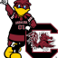

Cocky Investments Quick Links
InitialDataSets
1.Automotive Data Set
2.Financials Data Set
3.Media and Entertainment Data Set
4.Healthcare Data Set
Tools
A.(Python) Code for 3 Tickers
B.R Code for 3 Tickers
Sample Code with SQLDF From class
A Working Code Base which summarizes Returns using Yahoo Data... It returns tickers in a vector, and then passes the vector to the function.